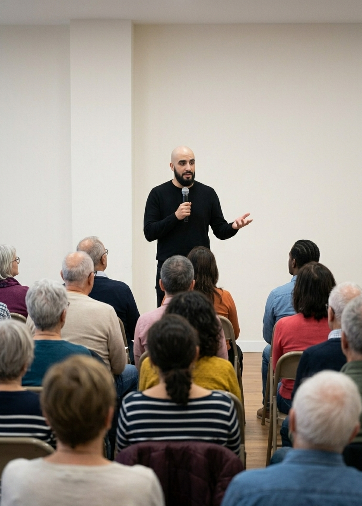
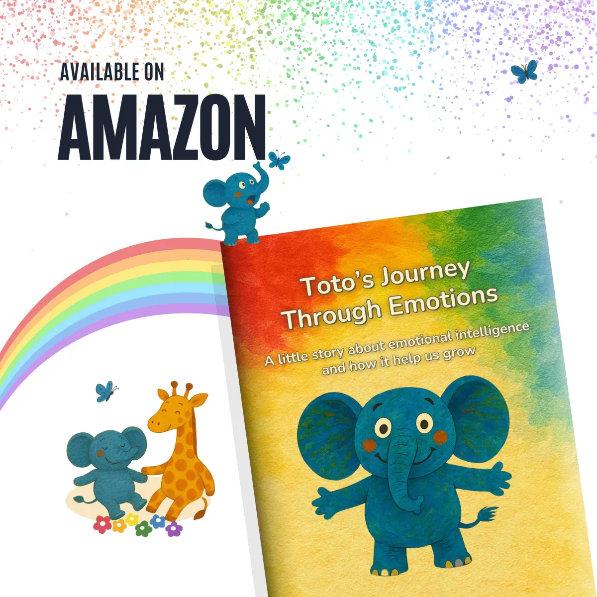

J.R. Hernandez · Psychotherapist · Burnout Specialist
A process-based psychotherapy practice for burnout, anxiety, emotional dysregulation, and relationship distress: clinical assessment, evidence-based intervention, and measurable outcomes.
About
I have spent the last decade living across six countries on three continents — Venezuela, Chile, France, the United States, Singapore, and Russia. I understand the specific pressures of building a life far from home: the reinvention, the invisible exhaustion, the grief you carry while performing competence. That lived experience shapes every clinical decision I make.
I built this practice for people who want a clear assessment of what is happening, a focused plan to address it, and honest tracking of whether it is working. My work is process-based, case-specific, and consultation-led. We define the problem precisely, reduce noise, and focus on what is most likely to change the outcome.
I am explicit about what this work can and cannot do. You will always know the focus, the next step, and what progress should look like in your daily life — so you can make informed decisions with confidence.
American Psychological Association (APA)
A specialization in the diagnostic frameworks and clinical profiles of anxiety disorders, mood disorders, substance use disorders, and addictive behaviors. This credential supports the ability to differentiate between conditions that often overlap in presentation: burnout from clinical depression, primary anxiety from stress-driven activation, and mood instability from emotional dysregulation. In practice, it sharpens the assessment phase — ensuring the intervention targets the correct condition from the start, not just the most visible symptom.
The School of Positive Psychology of Singapore
This is the clinical backbone of how every case moves from first contact to measurable change. The training is grounded in evidence-informed counselling that prioritizes structure: what is maintaining the problem, what specific skills will shift it, and how to track whether the intervention is landing. It shapes how sessions are organized, how the therapeutic relationship is used as a tool, and how clients build the capacity to act differently in the situations that brought them in. This is where the assessment-first, outcome-tracked approach originates.
Instituto de Estudios Psicológicos de España
A postgraduate degree in the science of emotions — how they are generated, how they dysregulate, and how they can be worked with systematically in therapy. This is the foundation for emotion-focused intervention across burnout, anxiety, and depression. It supports the ability to trace emotional patterns to their neurophysiological source — activation, appraisal, relational triggers — and intervene at the right level. When a client is stuck in emotional reactivity, shutdown, or chronic overwhelm, this training informs how that pattern is mapped, understood, and changed - contributing to relapse prevention.
Duke University School of Medicine, USA
A medical-level neuroscience foundation that bridges the gap between mind and body in clinical work. This training covers how the central nervous system organizes attention, arousal, emotion, and recovery — and what happens when those systems are under sustained strain. It is the basis for the integrative, somatic dimension of this practice: understanding why burnout is neurophysiological, why anxiety lives in the body before it reaches conscious thought, and why sleep disruption, cognitive fatigue, and emotional reactivity are connected at the level of neural circuitry. This is what makes the clinical work genuinely integrative.
University of Minnesota, USA
The practice incorporates complementary approaches where the evidence supports their use — as adjuncts that address mechanisms alongside standard psychotherapy. This specialization provides the clinical framework for that decision-making: how to assess whether a specific therapy is appropriate for a given case, evaluate its evidence base, educate clients about benefit and risk, and measure whether it produced the intended effect. Guided imagery and mindfulness — covered in depth in this program — are among the most evidence-supported tools for downregulating the nervous system in burnout and chronic stress, and their integration into the intervention phase of this practice is grounded in that training.
Duke University, USA
Delivering psychotherapy online requires more than technical access — it requires clinical competence in remote assessment, structured video-based interaction, and the ability to conduct evaluations that typically rely on physical presence. This specialization covers the clinical essentials of telehealth delivery: proper session preparation, patient-centered communication, and the neurological assessment skills needed to identify cognitive and physiological presentations through a screen. The neurological exam component is directly relevant to this practice: when a client presents with cognitive fog, fatigue, or sleep disruption, the ability to screen for neurological contributors — remotely and systematically — adds a layer of clinical precision that a purely psychological assessment would miss.
También disponible en español. Sesiones online para hispanohablantes en cualquier parte del mundo.
Approach
Every case follows the same clinical logic — and the plan is built around your specific situation.
We assess symptoms, patterns, history, and physiology to identify what is maintaining the difficulty — so the intervention targets the right mechanisms from the start.
Based on what the assessment reveals, we design a targeted plan drawing from CBT, ACT, and somatic regulation — with clear priorities and a defined direction for each session.
Progress is tracked in observable terms: fewer spirals, better sleep, faster recovery after triggers, more reliable follow-through. If something is not working, we adjust. Every week.
Specializations
These are the most common presenting patterns. Identifying what is actually driving the problem — not just the most visible symptom — is where the clinical work begins.
Your system has been running on overdrive for so long that rest alone does not restore it. Exhaustion, irritability, cognitive fog, and a nervous system stuck on alert.
Burnout is a neurophysiological state — the result of sustained stress that exceeds the body's capacity to recover. It affects sleep architecture, attention, emotional reactivity, and decision-making at a biological level. Unlike depression, which is pervasive and often independent of context, burnout is tied to specific chronic demands — and it responds to targeted clinical intervention when the right mechanisms are addressed. If you recognize yourself in this description, what you are experiencing is real, measurable, and treatable with the right approach.
We map stress load, sleep quality, nervous system activation, cognitive patterns, and the specific demands keeping the cycle alive — work, relational, financial, or health-related. The goal is a clear clinical picture of what is maintaining the burnout, so we intervene where it matters most.
Targeted downregulation of the stress response through somatic techniques, behavioral restructuring of recovery habits, and cognitive work on the patterns that sustain the overload. Each session has a defined focus and builds on the previous one.
Tracking recovery markers — sleep depth, energy stability, emotional reactivity, and follow-through under pressure — to confirm gains are holding in real-world conditions and prevent relapse into the same cycle.
Session estimates may vary depending on the complexity of the case.
Racing thoughts, tension, hypervigilance — your body stays in alert mode even when there is no immediate threat. The signal has gotten stuck.
Anxiety becomes clinical when the threat-detection system stays activated beyond the situation that triggered it. It is a dysregulation of the nervous system's alarm response — affecting breathing, muscle tension, sleep, concentration, and the ability to distinguish real danger from perceived danger. If this is what you are living with, it is a pattern that can be identified and changed.
We identify the anxiety profile — triggers, physiological activation patterns, avoidance behaviors, and the cognitive loops that keep the threat signal firing. This includes screening for whether the anxiety is primary or being driven by another underlying condition.
Graded exposure to disrupt avoidance cycles, cognitive restructuring of threat appraisals, and somatic regulation techniques to retrain the nervous system's baseline response. The plan is adapted to the severity and specific expression of your anxiety.
Building reliable self-regulation under real-world conditions — faster recovery after activation, fewer avoidance cycles, and a measurable reduction in baseline anxiety. The goal is that you can manage activation independently.
Session estimates may vary depending on the complexity of the case.
Flatness, withdrawal, loss of drive. A system that has shut down to protect itself, now making daily functioning harder than it should be.
Depression is a state of functional shutdown — the nervous system's response to sustained overload, loss, or helplessness. It affects energy, sleep, concentration, motivation, and the capacity to experience pleasure or meaning. If you have been living in this state, what you are experiencing is a recognizable clinical pattern with a defined pathway out.
We assess mood patterns, behavioral withdrawal, sleep architecture, cognitive rigidity, and the specific factors maintaining the depressive cycle — including relational isolation, contextual stressors, and whether the depression is reactive or part of a longer pattern.
Behavioral activation targeting the withdrawal-avoidance loop, cognitive work on hopelessness and self-criticism patterns, and physiological stabilization of sleep and energy. Progress is tracked weekly in functional terms.
Tracking functional improvement — consistent engagement, stable mood, restored initiative — and building relapse prevention strategies that hold when external pressure returns.
Session estimates may vary depending on the complexity of the case.
Reactions that feel disproportionate, emotional numbness, overwhelm — emotions that run you instead of informing you. Regulation is a trainable skill.
Emotional dysregulation means the system that processes and modulates emotional responses is operating outside a workable range. This can show up as explosive reactivity, chronic overwhelm, emotional numbness, or rapid oscillation between states. If you find yourself asking why you cannot control your emotions despite knowing better — the issue is not willpower. It is a pattern in how activation, appraisal, and response are wired together, and it responds to structured, skill-based intervention.
We map emotional triggers, activation thresholds, the specific dysregulation pattern (reactivity, shutdown, or oscillation), and the relational or physiological contexts where regulation breaks down. This includes identifying whether the dysregulation is primary or secondary to another condition.
Emotion-focused techniques to build awareness of early signals, increase tolerance of activation, and develop deliberate response strategies that replace reactive patterns. This draws directly from the neuroscience of emotional processing and affect regulation.
Tracking regulation capacity under real-life pressure — fewer escalations, faster return to baseline, and more consistent follow-through in high-emotion situations. The goal is durable self-regulation.
Session estimates may vary depending on the complexity of the case.
Repeating cycles of conflict, emotional distance, avoidance, or the same argument with different words. The pattern is the problem, and patterns can be mapped.
Relationship distress becomes clinical when the same interaction cycle repeats despite both partners knowing it is destructive. Pursue/withdraw, criticize/defend, escalate/shut down — these are protective strategies under stress that lock both people into a loop neither can exit alone. Recognizing the cycle is the first step; changing it requires structured intervention.
We identify the interaction cycle — the triggers that activate it, the emotional responses beneath the surface conflict, and the protective strategies each partner defaults to under stress. This includes individual assessment of each partner's regulatory capacity.
Interrupting the cycle through shared regulation skills, structured communication repair, and targeted work on the emotional drivers beneath the surface-level arguments. Both partners learn to de-escalate in real time and re-engage after rupture.
Building sustainable repair capacity — the ability to recognize activation early, de-escalate without withdrawal, and maintain connection under real-world stress. Progress is tracked through observable changes in conflict frequency, recovery speed, and emotional accessibility.
Session estimates may vary depending on the complexity of the case.
Relocation, breakups, career shifts, grief, cultural adjustment — rebuilding stability and direction when the ground shifts beneath you.
Major transitions destabilize the internal model your mind relies on to predict and navigate daily life — routines, roles, belonging, and meaning can all shift at once. When adjustment demands exceed your recovery capacity, the result is persistent preoccupation, impaired functioning, and a sense of being stuck between who you were and who you are becoming. This is a recognizable pattern, and it responds to structured support.
We assess the scope of disruption — what has been lost, what is destabilizing daily functioning, and whether the transition has activated deeper patterns such as anxiety, depression, or identity confusion that need to be addressed alongside the adjustment.
Stabilization of immediate functioning (sleep, routine, social engagement), processing of loss or grief where present, and structured rebuilding of direction and identity in the new context. The work is practical and oriented toward forward movement.
Tracking adaptation markers — stable functioning, reduced preoccupation with what was lost, and active investment in the present — to confirm the transition is being integrated and the new foundation is holding.
Session estimates may vary depending on the complexity of the case.
Services & Pricing
My fees reflect the level of structure, preparation, and clinical focus that goes into each session. Start with a free 15-minute consultation — contact me on WhatsApp to schedule.
Online via Google Meet · 60 minutes
Structured 1:1 psychotherapy. Assessment-driven, progress-tracked. Each session has a defined focus and builds toward measurable outcomes.
Every session follows a defined structure: review of progress since the last session, a focused clinical target for the current session, practical tools or interventions applied in real time, and a clear direction for what to work on between sessions. You will always know what we are doing and why.
Adults dealing with burnout, anxiety, depression, emotional dysregulation, relationship distress, or life transitions. Sessions are available in English and Spanish, worldwide.
Online via Google Meet · 75 minutes
Communication repair, conflict mapping, and shared regulation skills. A structured process for couples working through recurring patterns under real pressure.
Sessions follow a structured format: mapping the interaction cycle, identifying each partner's triggers and protective strategies, practicing de-escalation and repair in real time, and building shared regulation skills that transfer to daily life. Both partners receive clear direction between sessions.
Couples experiencing communication breakdown, recurring conflict, emotional distance, or relocation-related relationship stress. Both partners must be present for every session.
12 sessions · Online via Google Meet · 60 minutes each
A complete clinical program covering all three phases: assessment, targeted intervention, and sustained recovery. Designed for professionals who want to commit to the full process and see it through.
Sessions 1–4 map the clinical picture — stress load, nervous system state, sleep, cognitive patterns, and the demands maintaining the burnout. Sessions 5–12 deliver focused intervention: somatic downregulation, behavioral restructuring, and cognitive work on the patterns that sustain the overload. The final phase confirms that recovery markers are holding under real-world conditions.
Burnout recovery requires sustained intervention across biological, behavioral, and psychological levels. A 12-session commitment ensures the work reaches all three phases — and at $100 per session (vs. $120 individually), the program reflects that commitment with a reduced rate. Payment can be split into two installments: the first at the start, the second at session six.
4 sessions / month · Online via Google Meet · 60 minutes each
Weekly sessions for sustained clinical work. Priority scheduling, consistent follow-through, and a written session summary after every session — so you always know where you are in the process.
Four weekly sessions per month with priority scheduling. Each session follows the same structured format — defined focus, progress tracking, and practical direction. After every session, you receive a written summary documenting what was covered, what was identified, and what to focus on before the next session. This is clinical documentation designed for you — a tool for continuity and self-tracking.
Clients who have completed assessment and are in active intervention, or those in sustained recovery who benefit from weekly structure. The monthly commitment ensures the work builds consistently, which is critical when addressing burnout, anxiety, depression, or relational patterns. At $107.50 per session (vs. $120 individually), the plan rewards consistent engagement. Billed monthly.
For Teams & Organizations
Evidence-based group training designed for real work environments. Grounded in international occupational health standards, including WHO workplace mental health guidelines and psychosocial risk frameworks.
A structured training program addressing the neurophysiology of workplace stress, early identification of burnout risk factors, and practical regulation strategies that teams can apply immediately. Designed for organizations that take psychosocial risk management seriously — aligned with WHO guidelines on mental health at work and evidence-based occupational health frameworks.
How chronic workplace stress becomes burnout at a neurophysiological level — and how to identify early warning signals before performance and health deteriorate. Practical regulation techniques for high-pressure environments. Communication frameworks that reduce interpersonal friction and prevent escalation. How to build sustainable recovery habits within a demanding work culture.
Available as a half-day or full-day session, online or on-site. Designed for teams of 8–30 participants. Each session combines psychoeducation with applied exercises and a structured takeaway toolkit. Custom formats available for leadership teams, HR departments, or organization-wide implementation. Aligned with psychosocial risk assessment best practices for organizations meeting ISO 45003 or equivalent compliance requirements.

Published Work
Two books on emotional intelligence — one for adults navigating stress, anxiety, and low mood, and one for parents who want to give their children an early foundation. Available in English and Spanish on Amazon.
A 10-step guide to understanding and managing stress, anxiety, and depression through emotional intelligence and cognitive-behavioral strategies. Each step is structured, practical, and designed for independent application. Available in English and Spanish.
Get It on Amazon
A story for young children about what emotions are, where they come from, and why every one of them matters. Designed for parents who want to give their children an early foundation in emotional intelligence — because regulation is a skill that builds over a lifetime. Available in English and Spanish.
Get It on AmazonClient Reviews
Clients who came looking for structure, clarity, and a therapist willing to be direct about what the work would require — and what it would produce.
"I've had therapy before both in Singapore and abroad and I can say that my experience with JR is by far the best I've ever had. His approach to therapy is very practical — his methods really helped me get better and track my progress and see how far I got."
Google Reviews
"Super professional, he took the time to listen to me and provide guidance to face concerns that caused me anxiety and stress. He helped me identify and put into words those intrusive thoughts that affected my peace of mind and mental health."
Google Reviews
"I visited this counselor when I was in Singapore by recommendation and I liked his way of working so much that I continue to do online therapy with him even when I left the country."
Google Reviews
"It has been one of the most rewarding journeys of self-discovery I have ever had. At first I was reluctant to do online sessions, but after a couple of sessions I found it even more convenient than in-person sessions."
Google Reviews
"J.R. has been my official therapist for a while and I wouldn't change him for anyone else. He has helped me with anxiety and depression and I am grateful for that."
Google Reviews
"I decided to choose JR as my psychological counselor and this has been one of the best decisions I could have made. He was very attentive, he made me feel valued and he helped me to overcome the bad moment I was going through."
Google Reviews
FAQ
Research consistently shows that online psychotherapy produces equivalent outcomes to in-person therapy for anxiety, depression, burnout, and relationship distress. This practice has been delivering structured clinical sessions online since 2019 via Google Meet, across every time zone.
A psychotherapist provides structured psychological intervention through evidence-based methods — cognitive-behavioral therapy, emotion-focused techniques, and somatic regulation. A psychiatrist is a medical doctor who can prescribe medication. If medication is relevant to your case, I coordinate with a psychiatrist to ensure your treatment plan is aligned.
Psychotherapy treats clinical conditions — burnout, anxiety, depression, emotional dysregulation — using structured, evidence-based interventions. Coaching supports goal-setting and performance optimization in people who are already functioning well. This practice provides psychotherapy: clinical assessment, targeted intervention, and measurable outcomes.
Stress is a temporary response that resolves when the stressor is removed. Burnout is a neurophysiological state where the body's recovery system has been overwhelmed — rest alone does not restore it. If you are experiencing persistent exhaustion, cognitive fog, emotional flatness, or detachment from work despite breaks, that pattern points to burnout and benefits from structured clinical intervention.
The first session is a structured clinical assessment. We map what is happening — symptoms, patterns, history, physiology — to build a clear picture of what is maintaining the problem. You will leave with an initial formulation and a defined direction for the work ahead. It is not a casual conversation; it is the diagnostic foundation for everything that follows.
If what you are experiencing is disrupting your sleep, your concentration, your relationships, or your ability to function at the level you expect from yourself — that is enough. Therapy is appropriate when a pattern is persistent and self-correction has not resolved it. A free 15-minute consultation can help clarify whether this is the right step.
The effectiveness of therapy depends on the fit between the method and the problem. A previous experience that lacked structure, clear targets, or measurable tracking may not reflect what a process-based approach delivers. This practice begins with a clinical assessment that identifies what is maintaining the difficulty — so the intervention targets the right mechanism from the start.
Yes. All sessions — individual, couples, and the Burnout Recovery Program — are available in both English and Spanish. Working in your first language can improve emotional precision and reduce the cognitive load of processing difficult material in a second language.